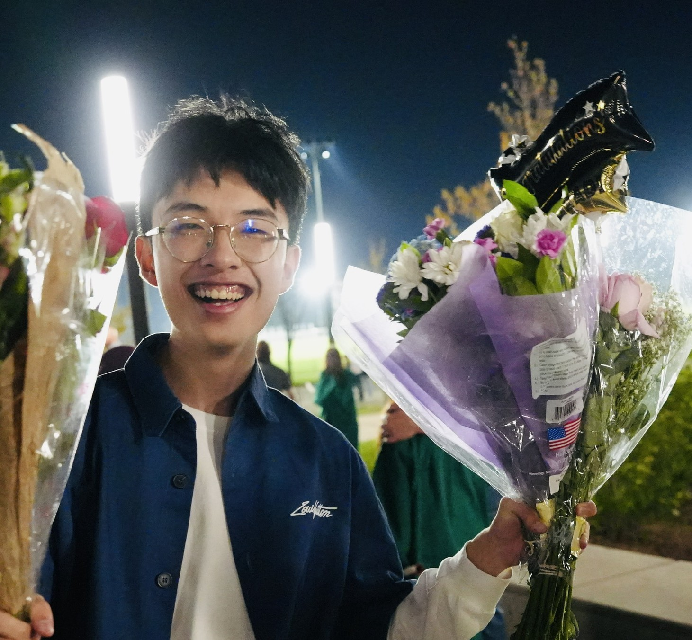
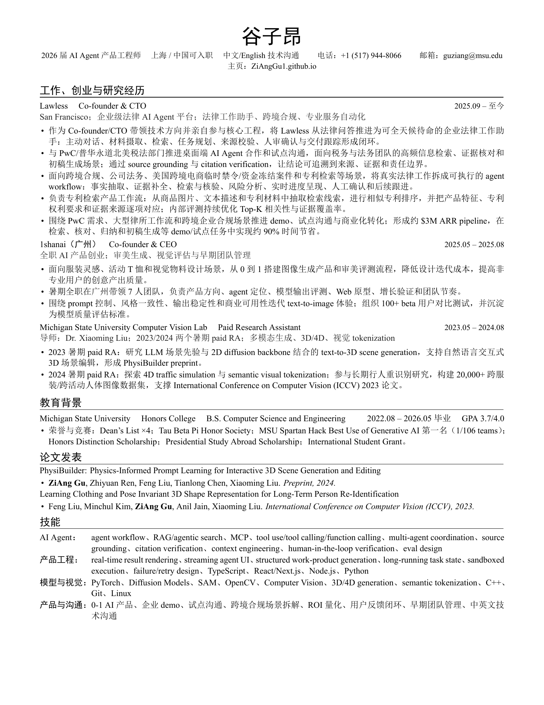

法律 AI Agent 工作台
从法律问答走向可交付的工作助手：材料摄取、检索、任务规划、来源校验、人审确认和交付跟踪必须在同一个产品回路里闭合。
- source grounding
- citation verification
- long-running task state
AI Agent 产品工程师 / Founder / Research Builder
我把复杂、模糊、需要专业判断的工作，拆成可以被 AI Agent 执行、追踪、校验并交付的真实 workflow。

01 ingest messy work materials
02 ground claims to sources
03 render progress in real time
04 keep humans in the loop_
这些模块展示的是简历里不容易展开的部分：我怎样理解 agent 产品、怎样把研究能力变成产品判断、怎样在早期团队里把事情往前推。
从法律问答走向可交付的工作助手：材料摄取、检索、任务规划、来源校验、人审确认和交付跟踪必须在同一个产品回路里闭合。
在广州带 7 人团队做 1shanai 时，我学到的不是“生成图片”，而是把审美、风格一致性、用户反馈和商业可用性变成可迭代指标。
3D/4D generation、visual tokenization 和 long-term person re-ID 的研究经历，让我更习惯把模糊问题拆成数据、表示和评测。
我希望这个网站比一页 PDF 更直接地回答：这个人能不能把 agent 产品做成真实业务结果？
来自企业法律 AI demo 与试点沟通的 ARR pipeline。
在检索、核对、归纳和初稿生成 demo 中节省的时间。
MSU Spartan Hack Best Use of Generative AI。
覆盖美国研究、创业实践和中国招聘语境的中英文技术沟通。
我关注的是 AI Agent 如何进入真实岗位：能处理材料、能解释来源、能暴露不确定性、能被人审、能把结果交付给业务。上海的 AI Agent 团队需要的不只是 demo，而是把不稳定的模型能力变成可靠工作流的产品工程能力。
I am most useful where model capability meets messy professional work: source-grounded retrieval, task decomposition, verification UX, and product loops that make agent output reviewable instead of magical.
这些是我想让招聘方感受到的工作方式：对产品品味敏感，对工程边界诚实，对验证和交付有执念。
真正有用的 agent 产品通常不是一个更聪明的输入框，而是一套能保存上下文、展示进度、允许失败恢复、让用户判断证据质量的系统。
在视觉生成产品里，用户经常不能准确说出想要什么；产品需要通过对比、约束、风格记忆和反馈路径，让非专业用户也能迭代到好结果。
在法律、合规、专利和企业知识场景里，答案本身不够；来源、证据、责任边界、下一步动作和人工确认都应该被设计出来。

Open to AI Agent / Product Engineering roles